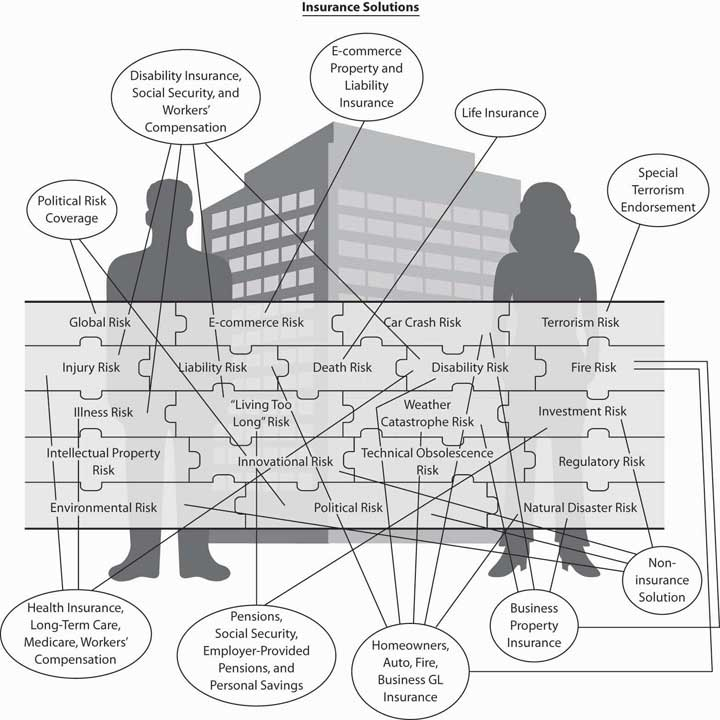

The adverse, or negative, effects of most of the risks can be mitigated by transferring them to insurance companies. The new traveler through the journey of risk mitigation is challenged to ensure that the separate risks receive the appropriate treatment. In Figure 6.1 "Links between the Holistic Risk Puzzle Pieces and Insurance Coverages", each puzzle piece represents a fragment of risk, each with its associated insurance solution or an indication of a noninsurance solution. Despite having all of the risks in one completed puzzle to emulate a notion of holistic risk, the insurance solutions are not holistic. Insurers sell separate policies that cover the separate risks. Each policy specifically excludes the coverage that another policy provides. For example, the auto policy excludes the coverage provided by the homeowners’ policy. These exclusions are designed to prevent double dipping, or double coverage. Every risk has its unique policy or a few layers of coverages from various sources. For the risk of dying prematurely, we can purchase life insurance policies as well as receive coverage from Social Security. For the risk of becoming ill and not being able to pay for medical care, we have health insurance. For the risk of losing our income because of injury, we have disability insurance (or workers’ compensation if the injury occurred on the job). Throughout this text, you will learn about all the policies and how to create an entire portfolio to complete the puzzle of the insurance solution within the risk management activities.
Figure 6.1 Links between the Holistic Risk Puzzle Pieces and Insurance Coverages
